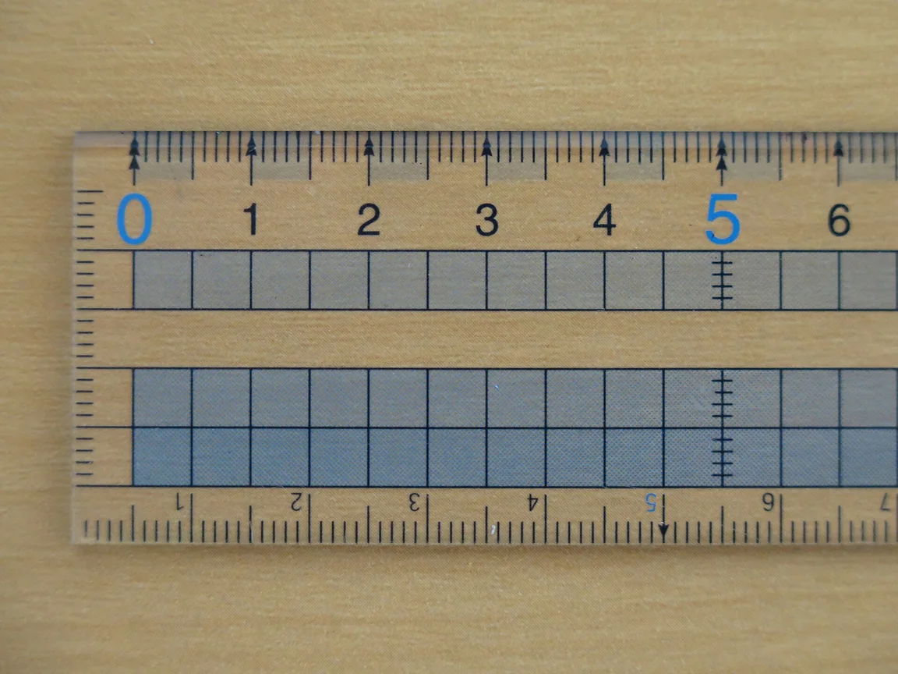
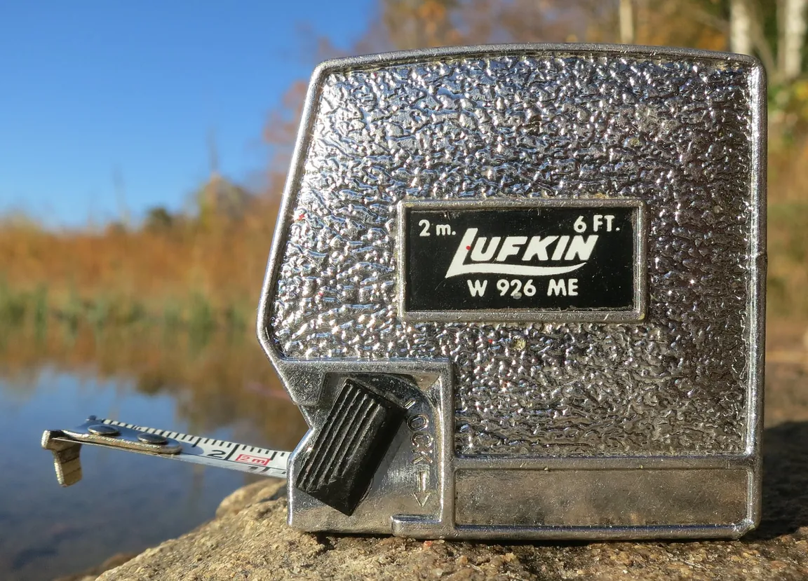
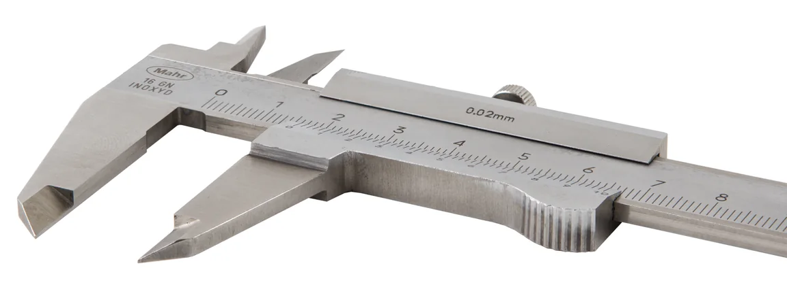
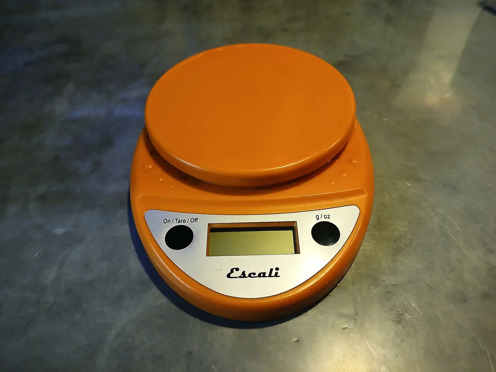
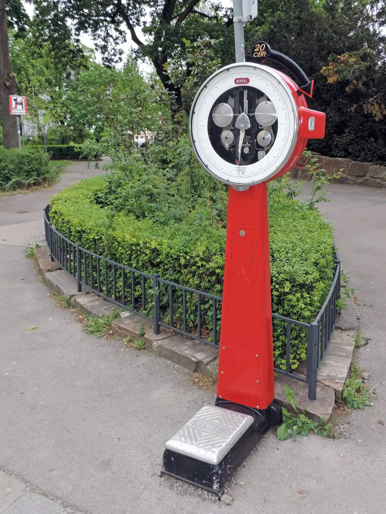
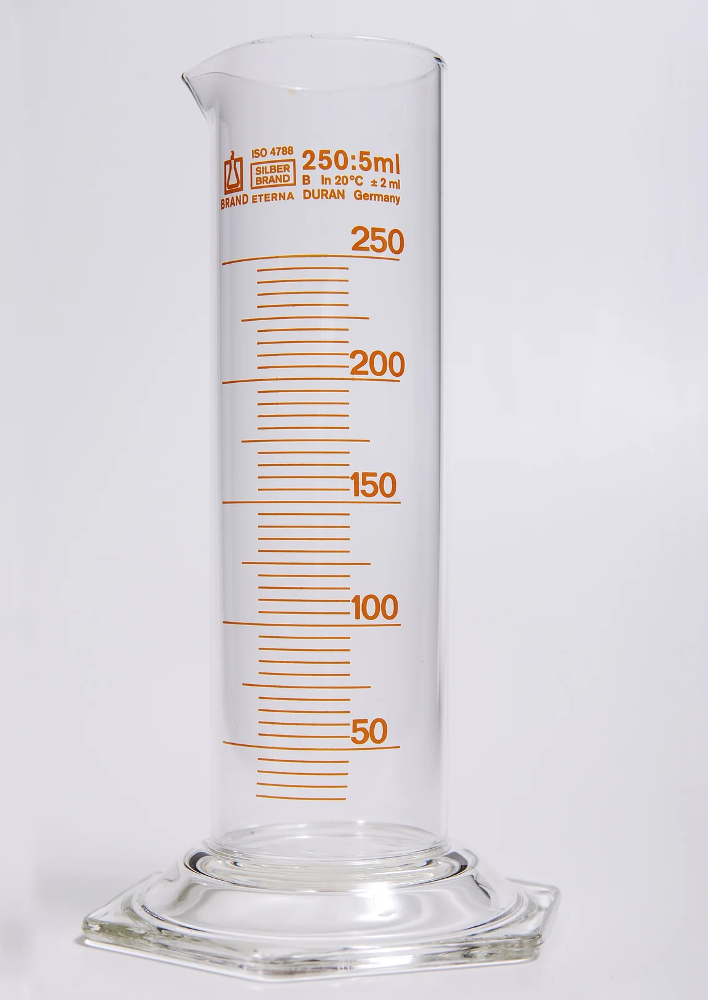
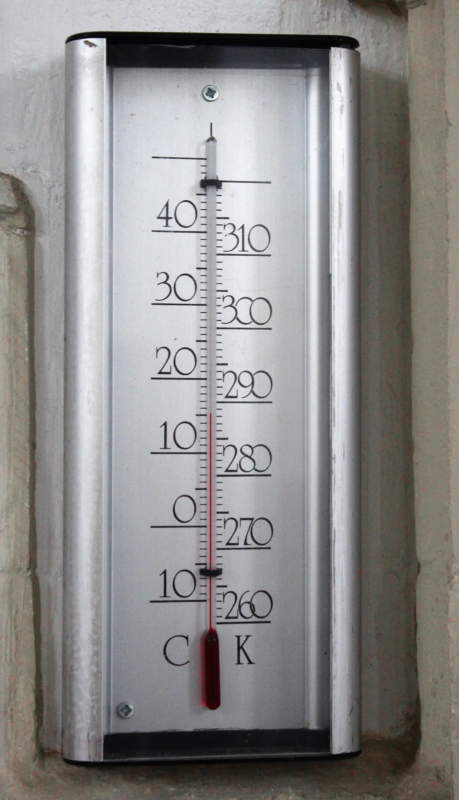
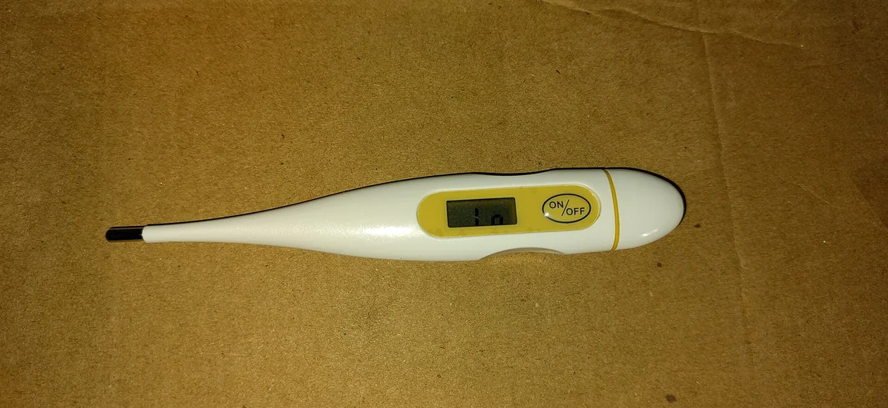
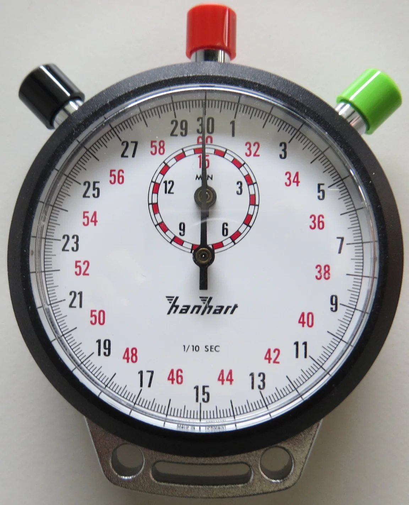
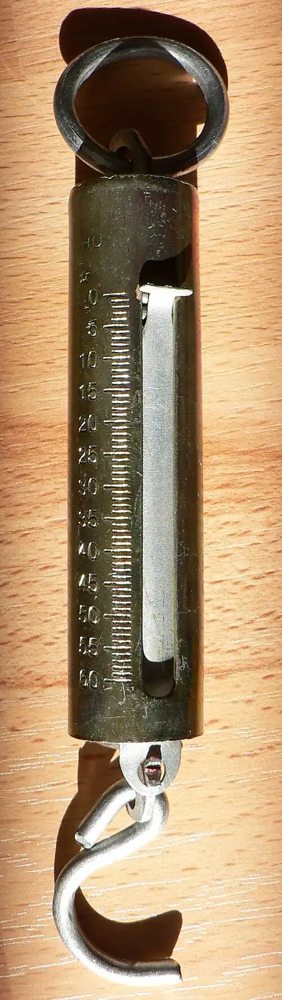

Veličina, značka, jednotka
Délka l – metr (m), hmotnost m – kilogram (kg), čas t – sekunda (s), objem V – m³ nebo litr, teplota t – °C, síla F – newton (N).
Pro 6. ročník: délka, objem, hmotnost, čas a teplota – jednotky, měřidla a převody.
Změřit veličinu znamená porovnat ji s jednotkou: zjistit, kolikrát se jednotka do měřené hodnoty vejde. Proto výsledek měření má vždy dvě části – číslo a jednotku. Zápis „délka je 12“ nic neříká: může jít o 12 mm, 12 cm i 12 m.
Délka l – metr (m), hmotnost m – kilogram (kg), čas t – sekunda (s), objem V – m³ nebo litr, teplota t – °C, síla F – newton (N).
Délku měříš pravítkem, metrem nebo posuvným měřidlem, hmotnost váhami, čas stopkami, objem kapaliny odměrným válcem, teplotu teploměrem a sílu siloměrem.
1 m = 100 cm, 1 km = 1000 m, 1 kg = 1000 g, 1 t = 1000 kg, 1 h = 60 min, 1 min = 60 s, 1 l = 1000 ml, 1 dm³ = 1000 cm³.
Při převodu se nejdřív zeptej: převádím na menší, nebo na větší jednotku? Na menší jednotku číslo vyjde větší (násobíš), na větší jednotku vyjde menší (dělíš). Metr je větší než centimetr, proto 2 m = 200 cm, ale 250 cm = 2,5 m.
Na stupnici nejdřív zjisti, kolik má jeden dílek: vezmi dvě sousední popsané rysky, odečti jejich hodnoty a rozděl počtem dílků mezi nimi. U odměrného válce čteš v úrovni hladiny, oči máš ve stejné výšce. Objem nepravidelného tělesa zjistíš tak, že ho ponoříš do válce s vodou: jeho objem je rozdíl hladin po ponoření a před ním. Typická chyba: čtení shora nebo zdola – údaj pak vyjde jinak.
Balík mouky má hmotnost 1500 g. Kolik je to kilogramů?
✅ 1500 g = 1,5 kg
Základní jednotky soustavy SI: délka metr (m), hmotnost kilogram (kg), čas sekunda (s). Teplotu běžně měříme ve stupních Celsia (°C), objem v metrech krychlových (m³) (odvozená jednotka) nebo v litrech. Objem tělesa nepravidelného tvaru zjistíš ponořením do odměrného válce.
Takhle vypadají skutečná měřidla. Všimni si, kde mají stupnici nebo displej a v jakých jednotkách měří.









